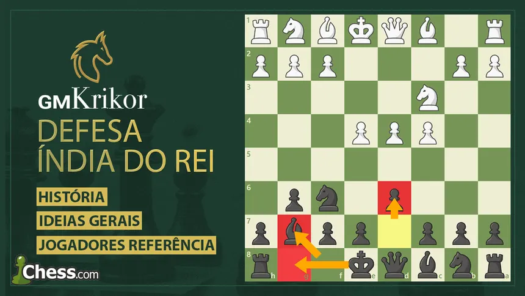

A Defesa Indiana do Rei é uma das respostas mais dinâmicas, agressivas e respeitadas no xadrez contra o avanço inicial do peão da dama. Em vez de disputar o controle do centro de forma tradicional ocupando o espaço com peões logo nos primeiros lances, as Pretas adotam uma estratégia hipermoderna. Elas permitem voluntariamente que as Brancas construam um centro forte com seus peões enquanto desenvolvem suas peças de forma recuada, alinhando o bispo em fianchetto para pressionar a estrutura adversária à distância. Essa abordagem gera posições altamente assimétricas e combativas. Após rocar rapidamente, as Pretas buscam romper a posição com o avanço de seus próprios peões no centro, criando um cenário de batalha em alas opostas. Enquanto as Brancas costumam buscar a expansão e a invasão na ala da dama aproveitando a vantagem de espaço, as Pretas lançam um ataque fulminante contra o rei branco na ala do rei, frequentemente avançando toda a sua ala de peões em uma corrida tática dramática contra o tempo. A abertura exige grande capacidade de cálculo e coragem, pois as Pretas muitas vezes precisam aceitar uma posição comprimida e defender investidas perigosas antes de liberar todo o potencial ofensivo de suas peças. Justamente por sua natureza de "vencer a qualquer custo", a Defesa Indiana do Rei se tornou a arma preferida de campeões mundiais lendários como Bobby Fischer e Garry Kasparov em momentos em que o empate não era uma opção. É a escolha perfeita para enxadristas que buscam posições complexas, sacrifícios temáticos e partidas cheias de tensão tática.